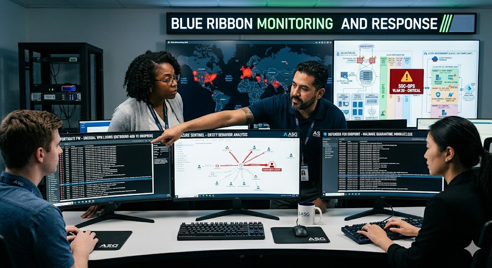

Company Profile
Atlas Systems Group (ASG) is a premier DoD IT services contractor. We specialize in providing managed help desk, SOC-as-a-Service, and enterprise-level IT infrastructure support to federal civilian and defense agencies. Our architecture is "Cloud-First," leveraging IL4/IL5 Azure Government environments for all CUI processing.
Founded in 2014, ASG has experienced rapid growth, expanding from a boutique consultancy to a trusted prime contractor. This trajectory is built on our unyielding commitment to security and reliability, earning us a high reputation within the Defense Industrial Base (DIB). Federal partners rely on ASG not just for steady-state operations, but for our proactive approach to threat manageemnt in the complex cloud enclaves we manage.
This deep technical expertise has positioned ASG as the 'specialized response team' for the government. We are frequently called in on difficult technical situations, ranging from forensic analysis of sophisticated cloud intrusions to rapidly engineering secure, compliant infrastructure for urgent mission requirements. When standard IT solutions fail or are deemed too slow, the DoD looks to Atlas to restore integrity and secure sensitive data.
Key Metrics
| Legal Name | Atlas Systems Group, LLC | CAGE Code | 8V9L1 |
|---|
| UEI Number | ASG2026UEI102 | Founded | 2014 |
|---|
| NAICS | 541513, 541519 | Ownership | Privately Held |
|---|
Network & Infrastructure
Hybrid Architecture: Arlington HQ (Site-to-Site VPN) ⟷ Azure Government (Entra ID).
VLAN Configuration
| VLAN | Name | Purpose | Scope |
|---|
| 10 | CORP-MGMT | Exec & HR Traffic | In-Scope |
| 20 | SOC-OPS | Monitoring & SIEM feeds | In-Scope |
| 30 | LAB-DEV | Test environment | Out-of-Scope |
| 99 | GUEST | Internet only (Visitors) | Out-of-Scope |
Hardware Inventory
- Firewalls: 2x FortiGate 100F (HA Cluster) at Arlington; Azure Firewall Premium in Cloud.
- Switches: 4x Cisco Catalyst 9300 (48-port) managed switches.
- Wireless: 6x Aruba AP-515 Access Points (WPA3-Enterprise).
- Sensors: 2x Security Onion IDS Nodes (Port Mirroring Core Switch).
Physical Security Controls

Internal Security View - Arlington HQ
Arlington HQ: 4th Floor Multi-tenant Office. Interior "CUI Enclave" construction.
Infrastructure Controls
- Electronic Entry: HID iCLASS SE Badge Readers (S2 NetBox Controller).
- Secure Server Room: Slab-to-slab partitioned walls with security mesh drop-ceilings.
- SOC Visibility: Frosted privacy film on all "Fishbowl" glass walls.
- CCTV: 8x Verkada IP Cameras. 30-day cloud retention.
Audit Evidence — Visitor Logs
| Date | Visitor Name | Purpose | Escort Name |
|---|
| Mar 01 | John Doe (Verizon) | ISP Repair | Robert Smith |
| Mar 03 | HVAC Tech (Building) | Unit Repair | [BLANK] |
Incident Response & Risk Register
Recent Incidents (Logged in Sentinel)
| ID | Date | Description | Action Taken |
|---|
| INC-26-02 | Feb 02 | Mimikatz alert on analyst Cloud PC. | Informal triage (no formal IR report). |
| INC-26-03 | Mar 12 | 4GB upload to personal Dropbox. | Closed as "False Positive" by J. Wu. |
Risk Management Experience & Priority Highlights
- 1. Proactive Risk Register Integration: ASG maintains a dynamic Risk Register where identified gaps (e.g., RA-01) automatically feed into the Plan of Action & Milestones (POA&M) for senior leadership review and resource allocation.
- 2. Hybrid Architecture Foresight: Recognizing cloud responsibility, ASG specifically segmented the Arlington S2S VPN tunnel (VLAN 20) to prevent on-premises general network contamination from impacting the primary CUI enclave in Azure Gov.
- 3. Vendor Supply Chain Validation: ASG pioneered a CUI flow-down audit for NAS technical solutions, requiring all tier-two installation partners to produce NIST 800-171 self-assessments prior to contract flow-down.
- 4. Zero Trust Identity Architecture: CISO David Chen prioritized the migration of all CUI-access accounts from standard AD to Azure Entra ID to enforce device compliance checks (managed device state) prior to VPN establishment.
- 5. Automated Sentinel Sentinel Response (SOAR): SOC Manager Sarah Jenkins developed a custom SOAR playbook that immediately locks a Windows 365 Cloud PC if Mimikatz is detected (e.g., INC-26-02) and creates an automated forensic task ticket for analysts.
- 6. Tabletop Exercise Realism: ASG utilizes simulated 'difficult technical situations' for quarterly tablestops, such as forensically analyzing a fictional 'DHS dashboard compromise' to test the IRP beyond general awareness scenarios.
- 7. Physical/Network Dual Validation: Physical Security Mgr Robert Smith coordinates weekly with the SOC to validate that all remote admin sessions mapped in NetBox match authorized badged entries to the Arlington HQ.
- 8. CUI Marking Automation: ASG engineered a custom M365 script that automatically marks any document containing Navy-specific contract numbers as CUI//CTI, significantly reducing manual error in technical document classification.
- 9. Privilege Separation Mandate: CEO Sarah Vance personally approved the migration to Privilege Identity Management (PIM) for Global Admins, eliminating standing 'Always-On' administrative access to the Azure Gov tenant.
- 10. Insider Threat Phishing: Monthly internal phishing exercises (monthly simulations) have reduced the SOC click rate by 50%, with users who fail standard tests automatically enrolled in remedial CUI Handling v1 training.
- 11. Forensic Integrity Protocol: All SOC analysts use distinct forensic accounts for incident triage, ensuring that investigation logs cannot be overwritten or altered by standard administrative credentials.
- 12. CMMC Level 2 as Priority: Recognizing the upcoming N68335 NAS requirements, David Chen prioritized the full close-out of GAP-01 (Shared Admins) over the end-of-life router replacement (RA-02), demonstrating proper security-based risk prioritized.
Risk Register Highlights
Engineers share one global admin account. Likelihood: High | Impact: High. Mitigation: Delayed due to operations.
Seeded Audit Findings (Audit Prep)
Students must identify these 7 findings within the data sets provided.
Requirement: AC.L2-3.1.1, 3.1.2.
Finding: Shared global admin usage prevents non-repudiation and violates separation of duties.
Requirement: SC.L1-3.13.1.
Finding: Azure Blob Storage "Contract_Technical_Data" found with Public Read access enabled.
Requirement: IR.L2-3.6.3.
Finding: IRP is stale (2023) with no evidence of tabletop exercises in last 12 months.
Requirement: SR.L2-3.17.1.
Finding: No security assessment performed for third-party RMM tool used on CUI enclave.
Requirement: CM.L2-3.4.1.
Finding: Analysts using personal MacBooks to access CUI via browser sessions.
Requirement: AU.L2-3.3.3.
Finding: Weekly log reviews not signed since Nov 2025; INC-26-03 closed improperly.
Requirement: MP.L2-3.8.7.
Finding: Unlocked shred bin containing CUI diagrams in common hallway.